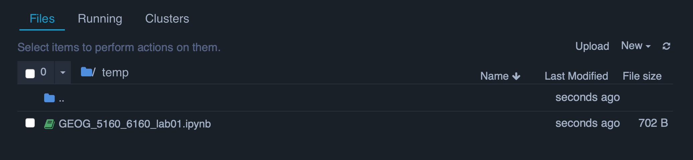
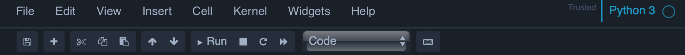

GEOG 5160 6160 Installation
Introduction
This document walks through installing and setting up R and Python. You should only need one of these for these class - I’d suggest using whichever you are most comfortable with. If you have any questions about which to choose, please ask me.
Before starting
For this class, the labs will assume that you have your files organized according to the following structure:
+-- geog5160
| +-- datafiles
| +-- lab01
| +-- lab02
| +-- lab03
...
| +-- lab11To do this, go to your Documents folder, and create a new folder called geog5160. In this now create two new folders, one called datafiles (where we will store all the data used across all labs and one called lab01, which we will use for today’s lab.
Now download the penguins.csv file from Canvas and move this to the datafiles subfolder. Download the notebook and move this to your lab01 folder.
Introduction to Python
Python is a high level programming language, designed for handling data (rather than software development). It is an interpreted language, which allows you to write relatively straightforward code that is then compiled in order to be run. This means that the code you write can be easily transferred between computers and operating systems, and you can just let the Python interpreter on the computer do all the work for you. In contrast to other programming languages it is dynamically typed, so you don’t need to track and declare all your variables, which generally means that it is easier to set up and run Python code than most low-level languages (e.g. c++), but with a higher risk of encountering problems with the variables you use (although these are pretty rare).
Python also has a large number of add-on packages that extend the basic function, and we’ll be using several of these for machine learning. Today, we’ll just use a couple of these for data manipulation and plotting.
Installing Python
There are two commonly used versions of Python: 2.7 and 3. Version 3 was released in 2008 and there has been a gradual transition to only using 3 (support for 2.x was stopped in 2020). In this class, we will only use Python 3. There are several packaged distributions of Python that come with additional utilities. I would recommend using miniconda (these labs were written using this). Instructions for installing miniconda can be found here. Make sure you install version 3.8 (or higher) and that you are installing the 64bit version.
Using conda
Windows
In windows, you can run the conda version of Python by going to the [Start Menu] > [Anaconda (64-bit)] > [Anaconda prompt]. This will launch a new terminal window, and if conda has been correctly installed you should see the following prompt:
(base) C:\Users\username>Mac OSX
Open any terminal. If conda has been correctly installed, you should see the following prompt
(base) username:Linux
Open any terminal. If conda has been correctly installed, you should see the following prompt
(base) username:Changing directories
In order to access the files, you’ll need to change directory in your terminal to the lab01 folder you made earlier using the cd command. If you know the full path to the folder, then simply enter:
cd /full/path/to/folderOnce you’ve successfully changed directories, check that the notebook file is in your folder you have changed to by type ls to list the files.
Windows
Finding this path can be challenging on Windows, but the easiest was is to find the folder in Windows Explorer, right click on it and go to ‘Properties’. If you’ve created this in your Documents folder, the path will be something like C:/Users/username/Documents/geog5160/lab01.
Max OSX
On a Mac, you can find the path to a folder in the Finder window, by clicking on [View] > [Show Path Bar]. If you’ve created this in your Documents folder, the path will be something like /Users/username/Documents/geog5160/lab01.
Linux
On a Linux system, the folder will be somewhere in your home directory. If you’ve created this in your Documents folder, the path will be something like /home/username/Documents/geog5160/lab01.
conda environments
One of the key features of conda is the use of environments. Each environment represents an isolated Python session, and so can be set up differently. This can help to avoid conflicts between add-on packages; you can create an environment for a particular type of analysis or data processing and only install the packages that you actually need. If conflicts arise, it is then easy to delete the environment and try to set it up again, all without impacting the base install of Python. The default environment is base (hence the (base) shown before the prompt). In general, you should only install packages here if you are likely to use them a lot. Packages that are specific to a given project should only be installed in that environment.
To create a new environment, simply type
conda create -n new-envPython may ask you about the installation location for this environment, just accept the default. The environment will be set up then made available for use. Note that this only creates the environment, but you are still in the base environment. To change to new-env, type
conda activate new-envAny you should see the prompt change from (base) to (new-env). If you want to see a list of all the available environments (the current one will be listed with a *):
conda env listYou can stop your current environment return to the base environment:
conda deactivateAnd environments can be deleted as follows:
conda env remove -n new-envNow create an environment for class work (called geog5160)
conda create -n geog5160
conda activate geog5160Installing packages
The conda command can also be used to install packages. To demonstrate this, we’ll start by installing the Jupyter Noteback package. This provides an interactive framework for testing and running Python code through your browser. Go to your terminal and enter the following code:
conda install -c conda-forge notebookAnd press [y] to install all the supplementary packages. This will install notebook from the conda-forge repository or channel. There are several channels that host these packages, and conda uses anaconda.com by default. If your package is hosted elsewhere you need to specify this with the -c argument. The best way to find out where a particular package is held is by googling conda install packagename and following the links. Once you run this command, conda will check your local environment against the remote one, and download the necessary files to install the notebook (this includes any dependencies). Once you see the following three lines, the installation is complete:
Preparing transaction: done
Verifying transaction: done
Executing transaction: doneNow we’ll install the pandas package to help with data manipulation and the matplot and seaborn packages for making simple plots:
conda install pandas
conda install matplotlib
conda install seabornYou will likely be prompted to install some supplementary packages; just press [y] to continue and install these.
jupyter notebooks
For the labs in the class, the Python code will be provided as jupyter notebooks. These are interactive html pages, that contain code and the output from that code, and are a convenient way to keep your Python work organized and test new ideas. To open one of these, you first need to start the notebook server:
jupyter notebookThis will launch a new page in your web browser with a list of the files that are available in your current directory.

Clicking on any of these will then open the notebook on a new browser page. Or you can open a new notebook by clicking on the [New] button in the top right. A notebook consists of a set of cells, blocks of code or text. Each cell has a set type: generally either code or markdown. Markdown cells are used for descriptive text, and can be formatted using basic markdown tags. Code cells are where you enter your Python code. Once you have entered your code, you can then click the [Run] button to run it, and any output will appear below the cell:

At the top of the page there are a set of menus and actions buttons. The arrows allow you to move through the available cells, and the [+] button adds a new cell below your current position. The [Cell] menu has a lot of options for changing the cell type and for running different parts of the notebook (e.g. run all the cells above your current position).

If you’ve got this far, we’ll switch to the jupyter notebook for the remainder of this lab. If you haven’t used these notebooks before, it’s probably worth spending a little time working with a new one at some point to get used to navigating through them.
Visual Studio Code
An alternative (but recommended) interface for Python programming is Microsoft’s Visual Studio Code (VSCode). This can be downloaded for your operating system here for free. Once installed, you’ll need to install the Python language support extension from the Extensions tab (click on the icon with four squares on the far left panel and search for Python).
Once this is installed, you should be able to open and create notebooks as you would with jupyter. These need to have a *.ipynb extension to be recognized as notebooks. Once opened, you can use the button in the top-left (labelled ’Select kernel) to use a given Conda environment. Make sure you set this to the environment you created for the class. If you have any trouble finding your Conda environments, there is a good guide to troubleshoot this here.
Introduction to R
R is a high level programming language, principally designed for statstical analysis and modeling. It is an interpreted language, which allows you to write relatively straightforward code that is then compiled in order to be run. This means that the code you write can be easily transferred between computers and operating systems, and you can just let the R interpreter on the computer do all the work for you. In contrast to other programming languages it is dynamically typed, so you don’t need to track and declare all your variables, which generally means that it is easier to set up and run Python code than most low-level languages (e.g. c++), but with a higher risk of encountering problems with the variables you use (although these are pretty rare).
R also has a large number of add-on packages that extend the basic function, and we’ll be using several of these for machine learning. Today, we’ll just use a couple of these for data manipulation and plotting.
Installing R
R is available through the web page of The Comprehensive R Archive Network. At the top of this webpage, you will find three three links for downloading R depending on your operating system: Windows, Mac, or Linux.
Windows
To install R on Windows, click the “Download R for Windows” link, then click “base”. On the next page, the first link should allow you to download the latest version of R. Run the program that this downloads and step through the installation wizard that appears. The wizard will install R into your program files folders and place a shortcut in your Start menu. Note that you’ll need to have all of the appropriate administration privileges to install new software on your machine.
Mac
To install R on a Mac, click the “Download R for Mac” link, then download the package link (e.g. R-4.4.0.*.pkg). You’ll see a choice of two package. The first (arm64) is for the newer Macs with the M1/M2/M3 chips and the second (x86_64) is for the older intel-based Macs. If you’re not sure which one to choose go to the Apple menu (top left) and click on About This Mac to see your chip. Once this has downloaded, click on the file to run the installer. There are some options during the installation, but I’d recommend using the defaults for these. If your computer requires a password before installing new programs, you’ll need it here.
Linux
R comes pre-installed on many Linux systems, but is often an older version, and you’ll likely want to update this. Click on the “Download R for Linux.”, which will take you to a new page giving options for some of the more widely used Linux distros: Debian, Redhat, SUSE, and Ubuntu. Clicking on any of these will take you to a new page with detailed installation instructions for that system. Note that you can also download the source code from the first page and compile it yourself. This is relatively straightforward on most Unix-type operating systems. ## RStudio
While R provides the computational engine for all the programming and analysis that you will be doing, its user interface is fairly basic. There have been several attempts to create a better interface; RStudio is probably the most widely used of these. It is designed to provide some extra tools and help in using R, and provides easier access to help documentation. Also, the RStudio interface looks the same for Windows, Mac OS, and Linux, which makes writing these labs easier.
You can download RStudio for free from the RStudio website. Click on the ‘Download’ link under RStudio Desktop, and then choose the right download for your operating system. Once you’ve installed RStudio, you can open it like any other program on your computer—usually by clicking an icon on your desktop.
R packages
Packages that are installed are kept in the R library directory, usually buried away in the computer system files. However, even when installed, a package and its functions are not available until it has been loaded into the R workspace. Once this is done you can use it’s functions, as you would those in the base version.
If you close R, the packages are cleared from the workspace. Upon restarting R, you will need to reload any packages you were using. You do not need to reinstall the package, only reload it.
Installing packages
Packages can be installed in two ways:
- Use the function
install.packages()from the console with the name of the package you wish to install - Go to the ‘Packages’ menu and select ‘Install packages..’
- In RStudio, go to the ‘Tools’ menu and select ‘Install packages..’
Using packages
There are several ways to use a package once it is installed:
- The command
library()will load a package into the R workspace from the console (or from a script) - In the basic version of R, using the menu ‘Packages > Load package’ brings up a window that allows you to load installed packages by double clicking on the name
- In RStudio, the ‘Packages’ tab in the bottom right panel does the same, bringing up a list of available packages.
For these last options, clicking in the box next to a package name will load the package, and clicking on the package name will bring up the associated help page.